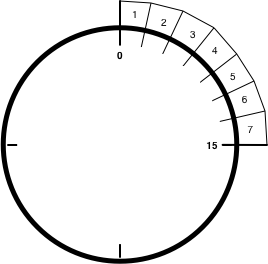

Early in my Emergency Communications career I came across the following diagram:

This diagram looks like a clock, with one of the quarters of the clock split into 7 individual slices. What it's depicting is Bandwidth and Throughput, which are the quantifiable measures of the effectiveness of a communications Channel.
Consider a Taxi Cab Dispatcher. This dispatcher has a single phone (Channel) on which to take calls, and the dispatcher can only answer one call at a time (Bandwidth). Each call takes about 2 minutes, this means the dispatcher can answer about 7 calls in 15 minutes (Throughput). The Throughput goes down if a call takes longer than 2 minutes (less time for other calls), and Throughput goes up if calls take less than 2 minutes (more time for other calls).
This is a principle to keep in mind when operating a communications channel:
Luckily, Message Length & Message Quantity are both tunable:
Message Length: The length of the message can be compressed by using things like brevity codes (10–4, Code 4, QSY). The less you have to say to get your message across, the quicker you can 'release' the channel for the next message.
Message Quantity: The number of messages to pass can be a function of either the types of traffic to be passed (routine, emergency, etc) or the number of sources of messages (users on the channel). The easiest solution to either of these is to add channels! A real world example of this would be a Fire Department that utilizes a Dispatch channel and a Tactical or Fire-Ground channel. The Dispatch channel is going to have periodic & well formatted messages, typically in a one-to-many pattern. The Tactical channel is going to have frequent bursty traffic with unformatted messages going between many users. The bandwidth needs of each of these channels is different.
As more users try to get their messages across on any given channel, each of them will be contending for the limited resources of that channel. This typically manifests in calls going unheard, and the all-too-common "Dispatch isn't responding!" complaint.
The best thing you can do as the user of a communications channel is to follow these steps: